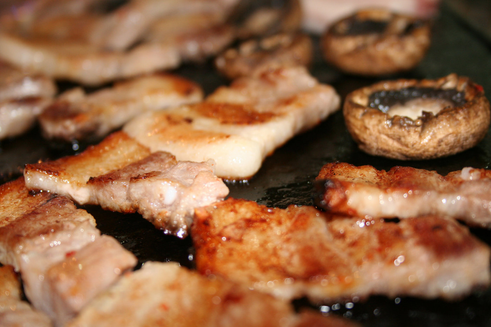
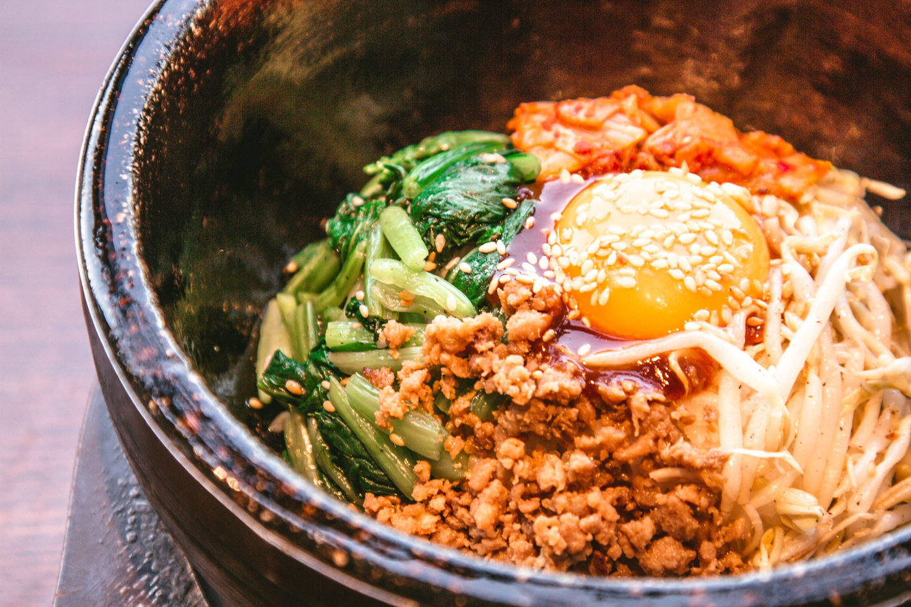
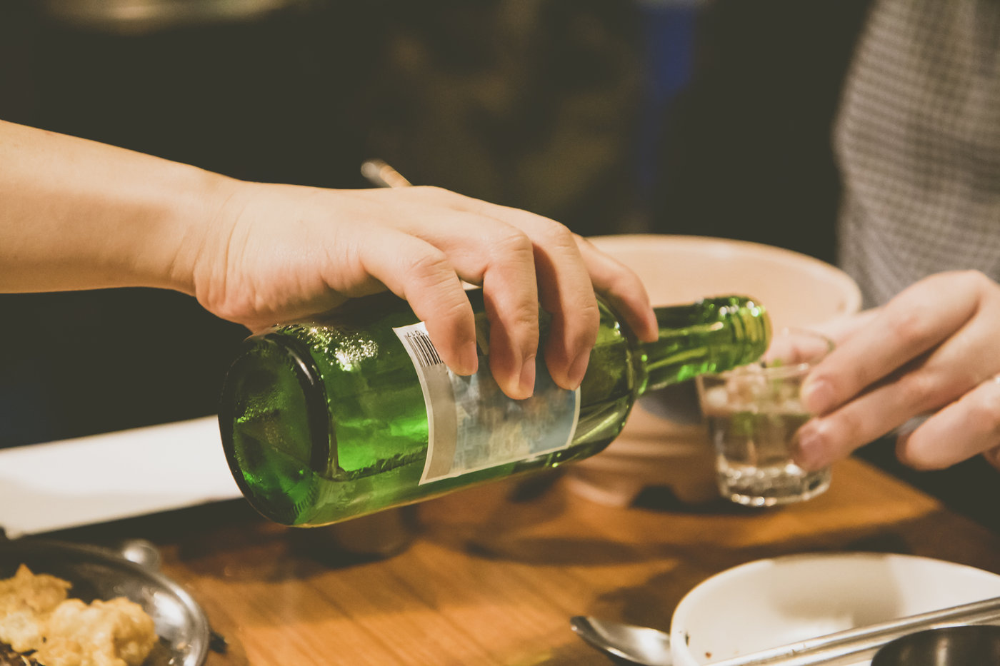
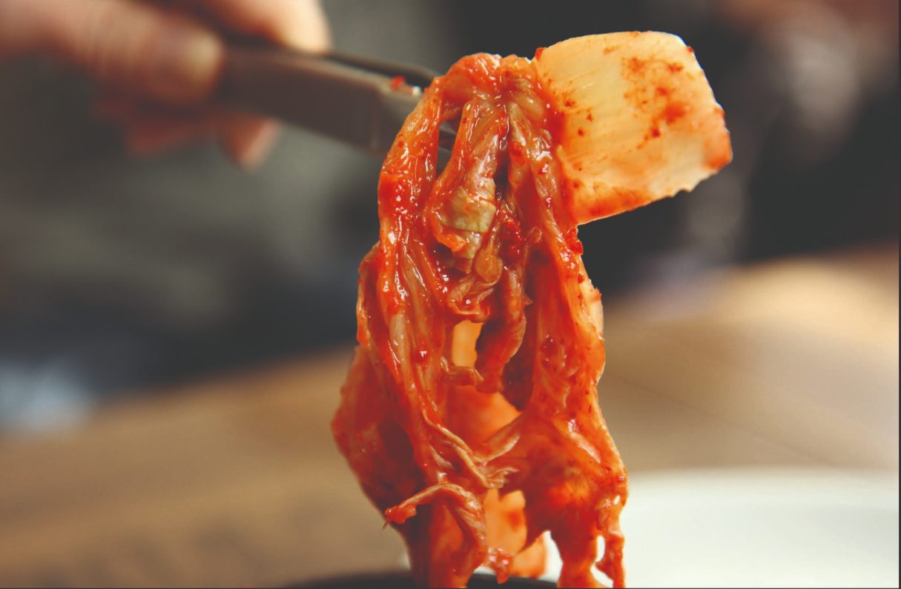

Chef's Special BBQ
27,95 p.p.
6 smaken kimchi, kimchi pannenkoek en pittige kimchi tofu soep (voor 2 personen)
Rundvlees, buikspek, lamsvlees, kipfilet, pangasius filet, garnalen, courgette, aardappelen, champignons

Rozenstraat 13, Utrecht centrum
Grill je eigen vlees, vis of groenten aan tafel, precies zoals jij het lekker vindt. Of laat je verrassen door de gerechten van onze chef-kok, bereid met liefde en traditionele Koreaanse smaken.
Meishi is een kleinschalig en sfeervol restaurant naast het Neudeplein en de Oudegracht, midden in het centrum van Utrecht. Hier staan kwaliteit en gastvrijheid centraal.
Naast BBQ bieden we een ruime keuze aan klassieke Koreaanse gerechten, zoals huisgemaakte kimchi, bibimbap, pittige rijstcake (tteokbokki) en hartige Koreaanse pannenkoekjes (pajeon). Of je nu houdt van vlees, extra pittig of liever vegetarisch eet: bij Meishi is er voor elke smaak wat wils.
Onze 6 smaken kimchi maken we zelf.

27,95 p.p.
6 smaken kimchi, kimchi pannenkoek en pittige kimchi tofu soep (voor 2 personen)
Rundvlees, buikspek, lamsvlees, kipfilet, pangasius filet, garnalen, courgette, aardappelen, champignons

24,95 p.p.
6 smaken kimchi, kimchi pannenkoek en pittige kimchi tofu soep (voor 2 personen)
Pangasius filet, garnalen, courgette, aardappelen, champignons

19,95 p.p.
6 smaken kimchi, kimchi pannenkoek en pittige kimchi tofu soep (voor 2 personen)
Gefrituurde tofu, mini loempia's, kerriehoekjes, courgette, aardappelen, champignons
Liever niet zelf grillen? Kies dan een bibimbap- of tteokbokki-menu of een gerecht van de losse maaltijden.
We serveren ook traditionele Koreaanse dranken zoals Koreaans bier, soju en makgeolli. Probeer bijvoorbeeld een verfrissende soju-cocktail of een glas lichtzoete makgeolli: perfect te combineren met de barbecuegerechten of een van de traditionele specialiteiten.
Bekijk de drankenkaartBel ons of stuur een mail, dan zetten we een tafel voor je klaar.
| Maandag | Gesloten |
|---|---|
| Dinsdag | Gesloten |
| Woensdag | 17.00 – 22.00 |
| Donderdag | 17.00 – 22.00 |
| Vrijdag | 17.00 – 22.00 |
| Zaterdag | 17.00 – 22.00 |
| Zondag | 17.00 – 22.00 |
De keuken sluit om 21.00 uur.
In een zijstraat achter de Bijenkorf, naast het Neudeplein en de Oudegracht. Vanaf Utrecht Centraal ben je er in 7 minuten lopen.
030 231 46 74
restaurantmeishi@gmail.com